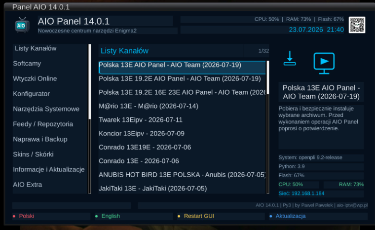
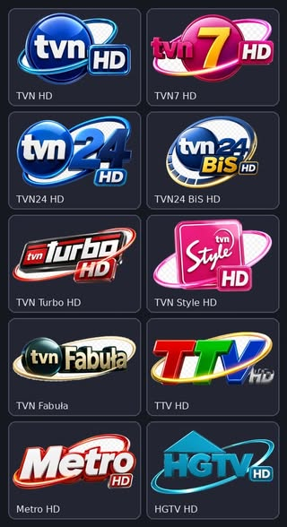
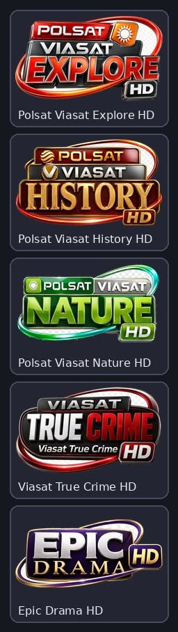
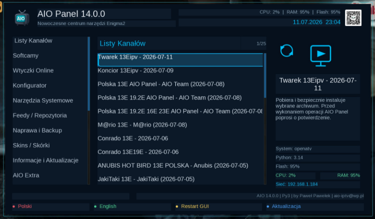

Witam na mojej stronie Paweł Pawełek
Autorskie picony • poprawiona instalacja • Enigma2
AIO Panel 14.0.1
Najnowsza aktualizacja dodaje autorskie picony przygotowane specjalnie dla AIO Panel oraz poprawia mechanizm ich instalacji na różnych systemach Enigma2.

🚀 AIO Panel 14.0.1 — aktualizacja piconów i instalatorów
W wersji 14.0.1 do AIO Panel dodano autorskie picony przygotowane specjalnie dla użytkowników polskich list kanałów. Aktualizacja poprawia także instalowanie grafik z archiwów i usuwa problemy zgłaszane na części obrazów Enigma2.
Najważniejsza zmiana: picony są teraz instalowane pewniej, mogą poprawnie zastępować starsze grafiki i nie powinny już wyświetlać błędnego komunikatu o braku wolnego miejsca.
🖼️ Autorskie picony AIO Panel
- dodano autorskie zestawy piconów przygotowane dla AIO Panel
- grafiki są przeznaczone do czytelnego wyświetlania na liście kanałów i w infobarze
- w aktualizacji pokazano między innymi zestawy kanałów TVN oraz Polsat Viasat
- istniejące picony mogą zostać prawidłowo nadpisane nowszymi wersjami
🔧 Poprawiona instalacja piconów
- usunięto błędne komunikaty o braku miejsca
- poprawiono obsługę powtarzających się nazw plików
- usprawniono instalację piconów z archiwów
- poprawiono nadpisywanie istniejących grafik
- zwiększono zgodność z różnymi systemami Enigma2
⚙️ Dodatkowe usprawnienia w 14.0.1
Super Konfigurator
- usprawniono wykonywanie kolejnych etapów konfiguracji
- poprawiono współpracę instalatorów uruchamianych z konfiguratora
- zwiększono stabilność całego procesu na różnych obrazach Enigma2
Softcam i aktualizacja
- usprawniono instalację Softcam
- poprawiono instalację OSCam-Emu
- ulepszono mechanizm aktualizacji AIO Panel
- zachowano zgodność z Pythonem 2 i Pythonem 3
🧰 AIO Panel nadal oferuje
- instalację i aktualizację list kanałów
- instalację wtyczek Enigma2
- obsługę Softcam, OSCam i OSCam-Emu
- instalację piconów, skinów i narzędzi
- Super Konfigurator
- kopie bezpieczeństwa i przywracanie list
- diagnostykę sieci i systemu
- informacje CPU, RAM, flash, systemu i Pythona
Wersja 14.0.1 rozwija nowoczesny interfejs wprowadzony w serii 14.x, pozostawiając dotychczasowy układ i wszystkie najważniejsze funkcje panelu.
Zdjęcia / podgląd



Aktualizacja i instalacja
Aktualizację można wykonać bezpośrednio z poziomu AIO Panel. Po zakończeniu instalacji zalecany jest ręczny restart GUI Enigma2.
wget -q -O - https://raw.githubusercontent.com/OliOli2013/PanelAIO-Plugin/main/installer.sh | /bin/shPolecenie wklej w terminalu SSH, Telnet lub w konsoli dekodera.
Instalacja pobranego IPK przez FTP
Wgraj plik IPK do katalogu /tmp, a następnie wykonaj instalację w terminalu.
opkg install /tmp/enigma2-plugin-extensions-panelaio_14.0.1_all.ipkAIO Panel 14.0.1 — by Paweł Pawełek